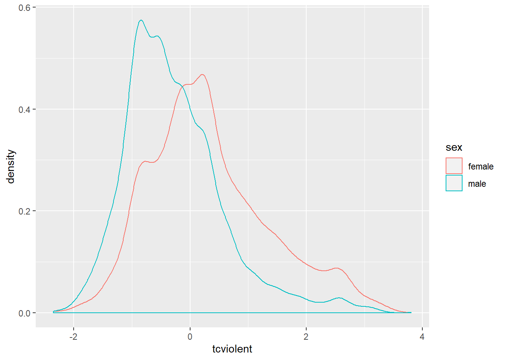
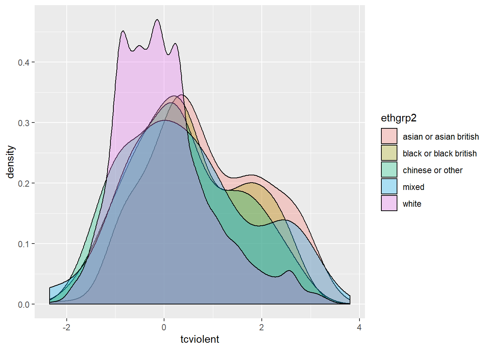
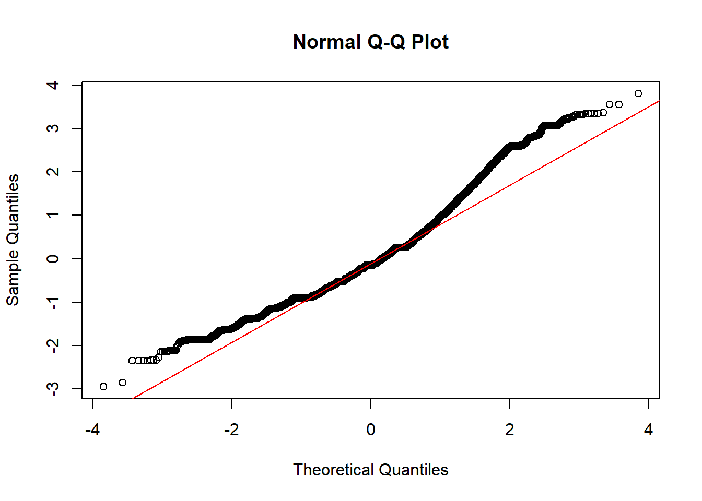
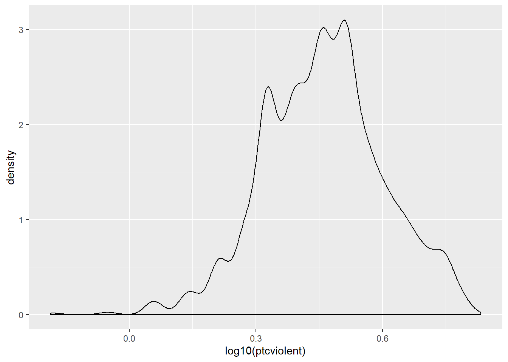
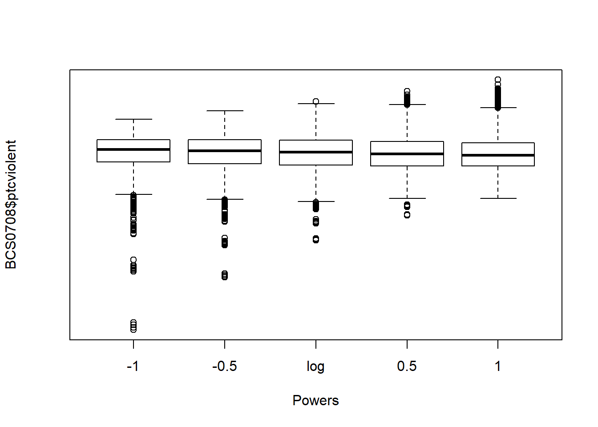

Chapter 6 Studying relationships between a categorical and a quantitative variable (Week 6)
6.1 The logic of hypothesis testing
In the last unit we learned how to think about and build confidence intervals. We explained how we could use confidence intervals to deal with uncertainty when estimating population parameters. Confidence intervals as we will see are very commonly used in statistics. The other key inferential tool in data analysis is the hypothesis test. Today we will focus on this second tool.
Last week we saw how we could use confidence intervals as well to form a view about whether there are differences across groups in the population. And we also saw how we could do “inference by eye” by virtue of visually comparing the confidence interval for the estimated mean value of fear for men and the estimated mean value of fear for women. Now we are going to use a different approach to make inferences about the existence of these differences in the population: hypothesis testing.
Wikipedia defines a statistical hypothesis test as “a method of making decisions using data from a scientific study”. The logic of hypothesis testing is based in the work of a number of pioneers in the field of statistics, the British Ronald Fisher and Egon Pearson and the Polish Jerzy Neyman . This work is so important that some people argue that Sir Ronald Fisher is one of the most influential academics in the history of science; not a small feat!
Hypothesis testing, or null hypothesis testing (NHST) as it is often referred to, proceeds in a number of steps.
- We always start with a research question
Our research questions in criminology can vary: Are ethnic minorities more likely to be stopped and searched? Does punishing offenders reduces crime? Is crime going down? Is self-control associated with offending? Here we are asking are women more afraid of violent crime than men?
- To answer a research question we have to formulate at least one and sometimes several research hypotheses related to it
A research hypothesis is simply a proposed answer to our research question that we can test by carrying out some research. Research hypothesis can be directional and non-directional:
“When the research hypothesis does not indicate a specific type of outcome, stating only that there is a relationship or a difference, we say that it is a nondirectional hypothesis. However, in those cases where a researcher has a very clear idea of what to expect -based on prior research evidence and/or theory -the research hypothesis may be more precise. In this case, the researcher may specify the nature of the relationship that is expected. Such a research hypothesis is called a directional hypothesis. When a directional hypothesis is used, the researcher states at the outset that he or she is interested in a specific type of outcome -for example, that one group has more arrests than another. Suppose we are interested in comparing the arrest records of drug involved offenders with those of offenders who do not use drugs. Our research hypothesis might be simply that the arrest records of drug involved offenders and offenders who do not use drugs are different (a nondirectional hypothesis). But based on prior knowledge of criminal behaviour among drug-involved offenders, we might want to state a directional hypothesis -that drug-involved offenders have more serious arrest records than do non-drug involved offenders. One problem with choosing the latter option is that if we state our research hypothesis as a directional hypothesis, we are stating that we are not interested in outcomes that fall in the opposite direction. In criminal justice research, we can often be surprised by what we learn in a study. Accordingly, researchers generally are cautious in defining a directional research hypothesis” (Weisburd and Britt, 2010: 120)
In our example, the research hypothesis will be nondirectional and simply state that there are differences in the fear of violent crime among men and women.
- The following step is to formulate what is called a null hypothesis
In frequentist statistical inference we test hypothesis not in reference to the research hypothesis but in reference to the null hypothesis. The null hypothesis gains its name from the fact that it usually states that there is no relationship or no difference. “We make decisions about hypothesis in relation to the null hypothesis rather than the research hypothesis. This is because the null hypothesis states that the parameter in which we are interested is a particular value” (Weisburd and Britt. 2010: 122).
In the example that we are using the null hypothesis would be that there is no difference in mean level of fear for males and females. This is the same than saying that the difference on fear for these two groups is zero. So, using the null hypothesis gives us a specific value. Typically this value is zero, whereas the research hypothesis would be consistent with any of many values other than zero. We will see in a second why working with a precise value such as zero is helpful.
De Veaux et al (2012) explain the logic of hypothesis testing as being similar to the logic of jury trials. In jury trials within the Common Law tradition somebody is innocent until proven guilty:
“the null hypothesis is that the defendant is innocent… The evidence takes the form of facts that seem to contradict the presumption of innocence. For us” (researchers) “this means collecting data… The next step is to judge the evidence. Evaluating the evidence is the responsibility of the jury in a trial, but if falls on your shoulders in hypothesis testing. The jury considers the evidence in light of the presumption of innocence and judges whether the evidence against the defendant would be plausible if the defendant were in fact innocent. Like the jury, you ask, ‘Could these data plausibly have happened by chance if the null hypothesis were true?’ If they are unlikely to have occurred, then the evidence raises a reasonable doubt about the null hypothesis. Ultimately, you must make a decision. The standard of beyond a reasonable doubt is wonderfully ambiguous… But when you ask the same question of your null hypothesis, you have the advantage of being able to quantify exactly how surprising the evidence would be were the null hypothesis true” (De Veaux et al. 2012: 479)
So, in hypothesis testing we look at our observed sample data. In our case, we look at the difference in fear of violent crime for males and females and we ask ourselves the question: is the observed difference likely to have come from a population where the real difference is zero (as our null hypothesis specifies)? As you can see, testing against the null gives us the advantage of testing against a specific value. We can compare the value that we observe with zero, the precise value hypothesised by the null hypothesis. The downsise of it is that few things are exactly the same in nature. So to say that the level of fear of crime in men and women is probably not exactly the same (e.g., a difference of zero) is arguably not always going to give us the answer that we want.
- The fundamental step in hypothesis testing, therefore, is the question: are the observed data surprising, given the null hypothesis? And the key question is to determine exactly how likely the data we observed would be were the null hypothesis a true model of the world
So in essence we are after a probability, specifically a conditional probability (i.e, the probability of our data if the null hypothesis were true). We are trying to quantify the probability of seeing data like the one we have observed (a difference of 0.79 in our example) if we take as given that the null hypothesis is true (and the value “should be” zero). We call this probability the p value. You may have heard this term before. All it means, it bears repeating, is the probability of observing our data if the null hypothesis were true.
“When the p value is high, then we can conclude that we have not seeing anything unusual. Events that have a high probability of happening happen often. The data are thus consistent with the model from the null hypothesis, and we have no reason to reject the null hypothesis. But we realize many other similar hypotheses could also account for the data we’ve seen, so we haven’t proven that the null hypothesis is true. The most we can say is that it doesn’t appear to be false. Formally, we fail to reject the null hypothesis. That’s a pretty weak conclusion, but it’s all we’re entitled to. When the p value is low enough, it says that it’s very unlikely we’d observed data like these if our null hypothesis were true. We started with a model. Now the model tells us that the data are unlikely to have happened. The model and the data are at odds with each other, so we have to make a choice. Either the null hypothesis is correct and we’ve just seen something remarkable, or the null hypothesis is wrong…” (De Veaux et al. 2012: 480)
When is a p value high and when is low? Typically, we use criteria similar to those we use when constructing confidence intervals: we would consider a p value low enough if 95% of the time the observed data was considered to be inconsistent with the model proposed by our null hypothesis. So, we look for p values that are smaller or bigger than 0.05.
SOMETHING ABOUT MORE CONSERVATIVE APPROACHES AND THE EXISTNIG DEBATE
That is, we look for differences that happen less than 5% of the time before we tentatively reject the null hypothesis. However, there is nothing sacrosanct about 95% and you could have good reasons to depart from this criterion (read page 123 to 128 of Weisburd and Britt, 2010 for further details). In fact, only last year a number of researchers argued we should use a more stringent p value to address the crisis of reproducibility in science.
You will see that statistics books refer to the threshold we use to define a p value as high or low as our level of statistical significance (also often referred to as the alpha level). In our example here (and all the others we will use this semester) we will use an alpha level of 0.05. That is we will reject the null hypothesis only if our p level is below that threshold.
- After defining our research and null hypothesis and having taken a decision of how low our p value ought to be in order to reject the null hypothesis, we need to specify a model for testing this null hypothesis. All models make assumptions, so an important part of specifying a model is stating your assumptions and checking that they are not being violated.
Through the semester we will cover a number of statistical tests, all with their own assumptions. These tests are appropriate in different circumstances (defined by their assumptions). Basically what we will be doing in the remaining thematic units this semester is to explain what those circumstances are for each test so that you can choose the right one on each occasion. We will see later the assumptions made by the sort of hypothesis tests you use to compare means across groups.
- Once we’ve gone through all those steps comes the calculation of the test statistics and, based on the results, our decision
Different tests that we will encounter this semester have different formulas. Sometimes I will give you a basic description of what those formulas are doing, because it is good to know what is being computed for conceptual understanding. But the mechanics are handled by the computer. You won’t need to memorise those formulas nor calculate anything yourself.
The ultimate goal of these statistical tests for hypothesis testing is to obtain a p value: the probability that the observed statistic (or a more extreme value) occurs if the null model is correct. If the p value is small enough (smaller than our alpha level: such as 0.05) then we will “reject the null hypothesis”. If it is not, we will “fail to reject the null hypothesis”. The language is important.
Whatever you decide, the American Psychological Association Statistical Committee recommends that it is always a good idea to report the p value as an indication of the strength of the evidence. That is, not only report the finding to be significant or not, also report your actual p value.
6.2 Comparing means across two groups (the t test)
Let’s elaborate with our example. Our research question is whether women are more afraid of crime. We are going to test a non-directional hypothesis and use an alpha level of .05. The test we use in this case is the t test, which relies in the t Student distribution introduced last week. This test makes a number of assumptions that we need to check first.
INFO ABOUT THE T TEST
This t test makes a number of assumptions:
We are comparing means or proportions (that is our original variable is either a quantitative variable OR we have a binary variable with a large sample) across two groups. We are indeed doing so.
Population distribution: normal distribution is assumed in both populations (but this assumption can be relaxed if both samples are large). We will check this shortly. Because the tests make assumptions about the shape of the distribution we say that the t test is a parametric test. Tests that do not make this sort of assumptions are called non-parametric.
Independence assumptions: To use the method the two groups must be independent of each other.This assumption would be violated if, for example, one group would consist of husbands and the other group their wives. The values for couples might be related. But this is not the case with the BCS data. Similarly if we compare an individual before and after a treatment, his/her observations would be related. For these situations we would need a different test (the dependent t test, which we won’t cover).
Sampling method: the data were obtained through independent random sampling. The BCS uses a complex survey design which would require the use of special procedures for hypothesis testing. However, those special procedures are well beyond the scope of this course and would typically be covered in more advanced courses. Therefore, for convenience we will proceed as if this assumption is met.
You may also want to check for outliers by plotting the data, for in some cases this may distort your results, particularly with smaller samples. So we are ok with 1 and 2, and are going to proceed as if 4 is met. What about normality? With large samples you can relax this assumption. However, you may want to also check if your sample data are normally distributed.
##R in Windows have some problems with https addresses, that's why we need to do this first:
urlfile<-'https://raw.githubusercontent.com/jjmedinaariza/LAWS70821/master/BCS0708.csv'
#We create a data frame object reading the data from the remote .csv file
BCS0708<-read.csv(url(urlfile))library(ggplot2,quietly=TRUE, warn.conflicts=FALSE)
ggplot(BCS0708, aes(x = tcviolent, colour = sex)) + #you will need to load the data as explained in week 1
geom_density() 
The plotted density provide a visual tool for assessing the unimodality and the symmetry of the distribution. Later we will discuss a more elaborate graphical tool for assessing the normal condition (e.g., the normal probability plot).
For now let’s assume this is good enough. Then we would be ready to compute the t test.
t.test(tcviolent ~ sex, data = BCS0708)##
## Welch Two Sample t-test
##
## data: tcviolent by sex
## t = 29.114, df = 8398.3, p-value < 2.2e-16
## alternative hypothesis: true difference in means is not equal to 0
## 95 percent confidence interval:
## 0.5614656 0.6425300
## sample estimates:
## mean in group female mean in group male
## 0.3281656 -0.2738322If the code and the results look familiar is because we already saw them last week when producing the confidence interval for the sampling distribution of the difference of two means. Last week we focused on the 95% confidence interval, now we are going to look at the first few lines of printed output.
First we see is the so-called Welch two sample t-test. It is a version of the t test that does not assume that the variance of your response variable is the same for your two groups. It is the default version we will always use. You also see a value for “t” (29.11), this is the test statistic obtained using the formula for the t test and something called df (abbreviation for degrees of freedom).
Farther to the right you see a value for p, this gives the probability associated with observing the difference in our sample if the null hypothesis were true. This value is 2.2e-16. If you are not used to this notation essentially what it means is that you need to move the decimal point 16 times to the left. In other words, the p value here is very close to 0 and therefore we can reject the null hypothesis that the difference in the population is 0. The observed difference in this sample would have been rather implausible if the null hypothesis were true. Therefore, here we would argue that our evidence suggests that we can reject the null hypothesis. We can say that there is a statistically significant difference between fear of violent crime for men and women in England and Wales.
It is important you remember this: the p value is not the probability that the null hypothesis is true. Imagine that our p value was 0.04. As tempting as it may be to say that a p value of 0.04 means there is a 4% chance that the null hypothesis is true, that just isn’t right. The only thing that we are in a position to state is: given the null hypothesis, there is a 4% chance of observing the difference that we have actually observed (or one more unlikely).
6.3 What does a significant effect mean?
Before we said that the difference between the mean score of fear of violent crime for males and females is statistically significant. It is of critical importance that you understand what this actually means. Unfortunately, in this context significance does not quite have the same meaning that we give it in normal language.
When in normal language we say that something is significant we mean to say that it is important. When in statistics we say that something is statistically significant we don’t mean to say that it is important. All it means is that, if we trust our data and methods, we are in a position to reject the null hypothesis with the threshold (alpha level) that we specified (0.05) a priori. It is something much more specific as you can see. Basically all we are saying is that we are willing to reject the null hypothesis that there is whatsoever no difference (or relationship) in the population.
However, rejecting the null hypothesis is, very often, not terribly “important” in a practical or theoretical sense. Think about our example. All we can say as a result of our t test here is that in the population on average the difference between fear of violent crime for males and females is likely to be different from zero. That’s all! The null hypothesis, in this sense, is almost invariably known to be untrue even before you do your study! Is that significant in the normal sense (i.e., important)? Is a difference of -0.6 in these scores important? The fact this variable uses an artificial metric makes it even more difficult to evaluate.
To make statistical significance even more “insignificant” in a practical sense, if you work with large samples almost everything will be statistically significant. It is easier to achieve statistically significant results if your sample size is large enough. Some statisticians therefore are very dismissive of p values as not very informative. They argue that p values may simply be a measure of sample size.
Precisely for these reasons, it is always important to combine the use of p values with some discussion of the effect size. That is, you not only want to discuss the probability of a difference in the population but want to say something about the magnitude of the observed difference.
In the example we are examining the effect size is the observed difference of -0.6. Is this large or small? Interpreting this in raw format, in the original scale, requires some subjective judgement. And I mean subjective in a positive way, it means you have to think about it. Unfortunately, the original scale here uses an artificial metric that is difficult to evaluate on its own.
We can always look at standardised measure of the effect size. You will find a number of standardised measures of effect size. They aim to give you a sense of how large these differences are by using a standardised metric. We are just going to use one of them, Cohen’s d, for this scenario. We can obtain this measure with the cohen.d() function from the effsize package, which you will have to install.
library(effsize, quietly=TRUE, warn.conflicts=FALSE)
cohen.d(BCS0708$tcviolent ~ BCS0708$sex)##
## Cohen's d
##
## d estimate: 0.6281126 (medium)
## 95 percent confidence interval:
## lower upper
## 0.5843047 0.6719205The output suggest that the Cohen’s d estimate is a medium effect size. Cohen proposed a set of rules of thumb to interpret the d statistic: an effect size (in absolute value) of 0.2 to 0.3 might be a “small” effect, around 0.5 a “medium” effect and 0.8 to infinity, a “large” effect. However, keep in mind these rules are not absolute. In some fields of research and in relation to some problems the rules of thumb may be slightly different. You need, in professional practice, to be alert to those nuances by being familiar to the rules that other researchers use in your particular area of work.
How do we write our results up? We could say the following (and in case you are wondering, we covered last week how to obtain the standard errors using the psych package):
“On average, males have a lower score of fear of violent crime (M=-.27, SE=.01) than the female group (M=.33, SE=.02). Using an alpha level of 0.05, this difference was significant (t=-29.11, p=.000) and represented a medium-sized effect (Cohen’s d=-0.63).”
This is what you would write in your “Findings” section. In your “Conclusions” you would need to discuss what the theoretical or practical implications of this finding are; connecting it to existing theoretical debates. If your test had been insignificant (a p value greater than 0.05) then you would have to say so: “the difference was insignificant, thus, we failed to reject the null hypothesis”.
One important thing to remember is that when doing hypothesis testing there is always the possibility of error. Our statements are probabilistic. We could be rejecting the null hypothesis when we shouldn’t (false positive or Type I error), if we are using an alpha level of .05 this may happen 5% of the time, or we may fail to reject the null hypothesis when we should (false negative or Type II error).

Errors
6.4 Power analysis
In this section we introduce the pwr package for power analysis.
6.5 Comparing means across several groups (ANOVA)
6.5.1 The problem with multiple comparisons
We have used the t test to assess differences in a metric variable across two groups defined by a categorical variable. As we have explained during the class, if you are interested in comparing across more than two groups then you cannot run multiple t tests. Why? Because we would run into the problem of multiple comparisons illustrated below:

xkcd
By running multiple comparisons you increase the change that you find significant differences by random chance alone. Imagine you throw a six face dice with numbers from 1 to 6. What is the probability of getting a 1? Right, 1/6. Now. Imagine that we throw the dice 6 times. What is the probability of getting a 1 at least once. Well, it would be the probability of getting a one each of the times multiplied by the number of times.
You can think of a statistical test as equivalent to this. The more times you run the test the higher the probability that something will come out significant. As the number of comparisons (tests) increase, the chances that this will happen increase. So, instead of running multiple t tests, we will run a single ANOVA test that allow us to explore whether there are significant differences across the groups being compared.
6.5.2 Visual exploration of differences in the distributions across the groups
We will look at the distribution of scores of fear of violent crime (tcviolent) vary across the ethnic groups indexed by the variable ethgrp2. Let’ visualise these differences:
ggplot(BCS0708, aes(ethgrp2, tcviolent, fill=ethgrp2)) +
geom_boxplot(outlier.size=1) +
guides(fill=FALSE) ## Warning: Removed 3242 rows containing non-finite values (stat_boxplot).
What you see here is that the boxplot also displays the values of fear for the few individuals in the dataset for which we don’t know the ethnicity (“NA” in the X axis). In many occasions this is not what you want. At least you are trying to understand your missing data problem (an advanced topic which we don’t cover this semester), you only want a plot that uses information for the individuals with valid information (that is the ones for which we have data on fear and ethnicity). If you have quite a few NA cases and they seem systematically different from the other groups, you may have some reasons to be concerned.
You can use the following code to modify the display (and also to ensure the boxes are ordered around the x axis not by alphabetical order but by order of the level of fear). The na.omit() function ask R to omit from the data all cases with missing information on the specified columns. The reorder() function ensure that the x axis is ordered according to the level of fear.
ggplot(na.omit(BCS0708[,c("ethgrp2", "tcviolent")]), aes(x=reorder (ethgrp2, tcviolent), y=tcviolent, fill=ethgrp2)) +
geom_boxplot() +
coord_flip() + #We are flipping the coordinates to avoid the overprinting of the factor levels
guides(fill=FALSE)
You can see here slightly different distributions of fear for the ethnic groups. Notice for example how 75% of the Asian group has scores on fear of crime that are higher than those of 50% of individuals in the White group. Let’s look at the statistics:
library(psych)
describeBy(BCS0708$tcviolent, BCS0708$ethgrp2)##
## Descriptive statistics by group
## group: asian or asian british
## vars n mean sd median trimmed mad min max range skew kurtosis
## X1 1 283 0.88 1.17 0.68 0.86 1.32 -2.07 3.32 5.39 0.19 -0.89
## se
## X1 0.07
## --------------------------------------------------------
## group: black or black british
## vars n mean sd median trimmed mad min max range skew kurtosis
## X1 1 120 0.5 1.14 0.3 0.48 1.2 -1.85 2.59 4.44 0.17 -0.92
## se
## X1 0.1
## --------------------------------------------------------
## group: chinese or other
## vars n mean sd median trimmed mad min max range skew kurtosis
## X1 1 93 0.34 1.14 0.23 0.3 1.33 -1.64 2.81 4.45 0.31 -0.88
## se
## X1 0.12
## --------------------------------------------------------
## group: mixed
## vars n mean sd median trimmed mad min max range skew kurtosis
## X1 1 35 0.52 1.3 0.39 0.5 1.16 -2.34 2.97 5.3 0.22 -0.68
## se
## X1 0.22
## --------------------------------------------------------
## group: white
## vars n mean sd median trimmed mad min max range skew kurtosis
## X1 1 7902 0 0.98 -0.15 -0.09 0.88 -2.35 3.81 6.16 0.85 0.72
## se
## X1 0.01Looking at the results we can clearly see that there seem to be some differences in the means across groups. The White group has the lowest mean (.00) and the Asian group has the highest mean (.88), this is consistent with the other location measures displayed in the boxplot (quartiles and the median). But how precise are these point estimates for the means as measures of the population parameters? How much trust can we place in them as indicative of the true level of fear of crime in the various ethnic groups in the population?
I want you to pay attention to the column in that table that provides you with the sample size for each of the ethnic groups. Notice anything worth thinking about here? Do you think that the estimates of fear of crime for each of these ethnic groups will be equally precise? Remember the lecture on sampling variability, sampling distributions, and confidence intervals, do you think that (given the different size of the samples for the various ethnic groups) the confidence interval will be equally wide for each of them? Why? Why not?
We have now examined the means for fear of crime for the various ethnic groups and have seen how the Asian group seem to have the highest average level of fear. But we have discussed in the class that point estimates are “problematic” because they do not communicate sampling variability - for that we need confidence intervals. Last week we explained how to do confidence intervals for the mean of two groups. I am going to show you here a different way of plotting confidence intervals for means of various groups.
The simplest way to do this is with the plotmeans function in the gplots package (not to confuse with the ggplot2 package). This function uses by default the t Student distribution for computing the confidence intervals (given the small sample size of some of the groups this is appropriate here):
#You will need to install this package first
library(gplots)
plotmeans(tcviolent ~ ethgrp2, data = BCS0708) #if you rather use the normal approximation you could use an additional argument: use.t=FALSE
When you only have two groups you can use these graphs (error bars displaying confidence intervals) in a way equivalent to the way that you use a t test, but when you have multiple groups you need to think about the problem of multiple comparisons.
6.5.3 ANOVA
So, again, we see some differences in means. Are these differences statistically significant? In other words, can we infer that they exist in the population from which the sample was drawn? For this we can run ANOVA and an F test.
How does this test work? We run ANOVA because we want to decide if the sample means are different enough for us to be able to reject the null hypothesis that they are different in the population. Clearly, if they are very different between themselves in the sample we will be in a stronger position to do this. That should be clear: if you want to talk abut differences in the population observing big differences across the means in the sample gets you closer to that.
What ANOVA does is to contrast the variability between the groups with the variability within the groups to produce a ratio: (Variability between the groups)/(Variability within the groups). If there is more variability between the groups than within the groups the more confidence we can have in a conclusion that the population means are not equal. Likewise, if there is more variation within the groups than between the groups, we will be in weaker ground to conclude that the population means are different. This short video explains it with an example.
So that’s how ANOVA gets the name, it is a ratio of variability, to be more precise a ratio of variances. The observed value is then compared to a probability distribution we haven’t covered yet: the F distribution. We have talked about the normal and the t distribution, the F distribution is just another family of probability distributions. But the idea remains the same earlier in relation to the t test. If you obtain large absolute values for F, you will be more confident that the observed differences are inconsistent with the null hypothesis. These values will have a low probability of being observed if the null hypothesis is true (if all the population means are equal) and therefore we will be able to reject this null hypothesis.
To run the ANOVA test we use the aov() function:
fearmodel.1<- aov(tcviolent ~ ethgrp2, data=BCS0708)
summary(fearmodel.1)## Df Sum Sq Mean Sq F value Pr(>F)
## ethgrp2 4 253 63.21 64.54 <2e-16 ***
## Residuals 8428 8254 0.98
## ---
## Signif. codes: 0 '***' 0.001 '**' 0.01 '*' 0.05 '.' 0.1 ' ' 1
## 3243 observations deleted due to missingnessThe result is significant suggesting that there are some significant differences across the ethnic groups in fear of violent crime. The probability of observing this data, with the noted differences in means, if the null hypothesis were true is also very low (<2e-16).
Done, right? Well, not quite. Remember the steps in a hypothesis test. Before running the test we need to think and check the assumptions of the test, that should precede running the test. The ANOVA F test makes the following assumptions: + Independence assumption: the groups must be be independent of each other (this assumption would be violated if for example we compare a subjects performance before some treatment, again during the treatment, and then after the treatment: for this you would need something called repeated measures ANOVA which we don’t have the time to cover). + Randomisation condition: were the groups created through randomisation or in case of surveys are the data from each group a representative sample of that group? As with the t test, we are assuming simple random selection, which is not the case when the survey uses a complex survey design (but as we said then we will ignore this for convenience). + Equal variance assumption (also called the lovely names of homogeneity of variance or homoskedasticity): to check this assumption you need to check that the groups have similar variances (we’ll discuss this in greater length next). But it is important you know statisticians have discussed the degree to which this assumption matters, or in other words to what degree ANOVA is robust to violations of this assumptions. Is ANOVA robust (will give us results we can trust) when this assumption is violated? Andy Field and his co-authors (2012) discuss this at length in page 413. His view is that “when sample sizes are unequal, ANOVA is not robust to violations of homogeneity of variance” and we should proceed accordingly. + Normal population assumption: like the t test, we need to assume that the normal model is reasonable for the populations underlying each of the treatment groups.
6.5.4 Checking homogeneity of variance and dealing with unequal spread
Let’s start by discussing why we care about the spread of the groups. Remember that ANOVA contrasts variability between the groups with variability within each group. If the variability within the groups varies, we are making this pooled variance larger, reducing the F statistic, and making it less likely that we can reject the null hypothesis. So when you have this problem, the ANOVA test will usually be a conservative test that will reject your null hypothesis less often than it should.
Look at the boxplots we produced. Does it look as if the spreads change systematically with the centres? Do the boxes with the bigger centres also have the wider spread? This sort of systematic trend may be more concerning than random differences in spread across the groups.
We can also run a test that will check the homogeneity of variance. This is the Levene Test. We can run this test with the leveneTest() function of the car package.
library(car)
leveneTest(BCS0708$tcviolent, BCS0708$ethgrp2, center = median)## Levene's Test for Homogeneity of Variance (center = median)
## Df F value Pr(>F)
## group 4 13.433 6.476e-11 ***
## 8428
## ---
## Signif. codes: 0 '***' 0.001 '**' 0.01 '*' 0.05 '.' 0.1 ' ' 1In this case, the test is significant suggesting that the variances are different in the population. However, you need to keep in mind that with the large samples of some of the groups this result is unsurprising.
We can further explore this assumption plotting the results from the ANOVA model we already run. Plotting the results of this ANOVA model allows us to inspect some plots that are useful for diagnosing problems.
plot(fearmodel.1) #Running this would result in four consecutive plots.
#Alternatively if you don't want to run ANOVA first and store the results in an object
plot(aov(tcviolent ~ ethgrp2, data=BCS0708))As Andy Field and his colleagues (2012) suggest the more important of these plots are the first two (to assess equal spread and normality). If you don’t want to print the four diagnostic plots you need to use more specific instructions so that R know which one you want. Let’s just get the plot we need for assessing equal spread:
plot(fitted(aov(tcviolent ~ ethgrp2, data=BCS0708)), resid(aov(tcviolent ~ ethgrp2, data=BCS0708)), xlab = "Fitted values", ylab = "Residuals", main = "Residuals vs Fitted") # plot a diagnostic check for heteroscedasticity in the residuals from the response Y to a factor or numeric A
This plot can be used to further explore homogeneity of variances. It is a plot of residuals versus fitted values (we will return to this later on this semester, for now just focus on interpretation as detailed below). We already know the Levene Test is significant and that the variances cannot be assumed to be the same in the population. In this sort of situations you expect plots such as this in which the vertical lines do not have the same length (longer collection of points suggests more variance and shorter collection of points less variance). We should be particularly concern with any systematic patterning (that is some sort of funnelling visual effect suggesting a systematic shortening or expanding of the lines as we move right to left in the X axis).
It looks as if the larger group (Whites) is the one with more variance. Again, in this sort of scenarios the ANOVA F Test will be more conservative (it may lead you to reject the null hypothesis in more occasions than it is warranted). Despite this we found a significant effect, so in practical terms it does not look as if the homogeneity of variance was such a big deal (it made our test more conservative right, but we still manage to reject the null hypothesis).
In those situations when you are concerned about the violation of this assumption because you have samples for some of the groups, we could run instead of ANOVA the Welch’s F test for equality of means:
oneway.test(tcviolent ~ ethgrp2, data=BCS0708)##
## One-way analysis of means (not assuming equal variances)
##
## data: tcviolent and ethgrp2
## F = 46.663, num df = 4.00, denom df = 155.14, p-value < 2.2e-16In this case, the substantive conclusion is unsurprisingly the same. You reject the null hypothesis given the low p value associated with the observed F value.
6.5.5 Checking normality and dealing with problems
The F tests require the underlying errors to follow a Normal model. Stricto sensu, we need to check the Normal model is reasonable for the population underlying each group. We should start by looking at the side-by-side boxplots for indications of skewness. If they are all or most skewed in the same direction, the normal condition will fail. We also need to look at outliers within each group (particularly with smaller samples). You may also find it useful to compare the density estimates.
ggplot(na.omit(BCS0708[,c("ethgrp2", "tcviolent")]), aes(x = tcviolent, fill = ethgrp2)) +
geom_density(alpha = .3)
We can also use a normal probability plot of the residuals. If we had use plot(fearmodel.1), the second of the four printed plots would be the normal Q-Q plot. Alternatively we can specifically ask for it:
qqnorm(resid(aov(tcviolent ~ ethgrp2, data=BCS0708)), main="Normal Q-Q Plot")
qqline(resid(aov(tcviolent ~ ethgrp2, data=BCS0708)), col = 2)
# normal scores check for skewness, kurtosis and outliers in in the residuals As before, we are concerned here with clear departures from the red line. How do you interpret a QQ plot? It takes practice and some subjective judgement, it’s kind of an art. These are common patterns and possible interpretations:
all but a few points fall on a line: outliers in the data
left end of pattern is below the line and right end of pattern is above the line:long tails at both ends of the data distribution
left end of pattern is above the line and right end of pattern is below the line: short tails at both ends of the data distribution
curved pattern with slope increasing from left to right: data distribution is skewed to the right
curved pattern with slope decreasing from left to right data distribution is skewed to the left
staircase pattern (plateaus and gaps): data have been rounded or are discrete
You may find these examples of interpretation useful. We can see there are some at both ends.
Also this shiny app is an interactive way to get your head around interpreting Normal QQ plots.
The qqPlot function of the car package assists the interpretation by drawing a confidence interval around the expected values:
qqPlot(fearmodel.1)
## [1] 1761 4769We can see that there is some departure from normality.
Sometimes when non-normality is an issue transforming your variable may be a way of solving the problem. You create a new transformed variable based on the original one that will now meet the normality requirement. This is something that can also sort issues with extreme observations (outliers). The idea behind transformations is that “you do something to every score to correct for distributional problems, outliers or unequal variances” (Field et al. 2012). There’s nothing dodgy about it. It’s not like we are cheating, because the same transformation will be applied to all scores. But it changes the units of measurement, which can make interpretation a bit more obscure.
There are many different potential transformations: log transformations, square root transformations, reciprocal transformations, reverse score transformations, etc. How do you choose? Trial and error. That is, you got to work and work until you find one that solves your problem. And sometimes none of the transformations give you an ideal solution.
We will illustrate the process of trial and error for normalising tcviolent (as much as we can). Let’s look again at the distribution of the variable.
ggplot(BCS0708, aes(x = tcviolent)) +
geom_density()## Warning: Removed 3242 rows containing non-finite values (stat_density).
We can see that the distribution is multimodal and that the tail to the right is longer than the tail to the left, there is a positive skew. We can also see that the values range from negative to positive values. Many of the transformations we use do not work well when we have negative values or zeros. So one way to allow them to work is to add a constant large enough to avoid zeros. I will add three to the variable:
BCS0708$ptcviolent <- BCS0708$tcviolent+3This code creates a new variable ptcviolent in the BCS0708 dataframe that is the result of adding 3 to the original variable tcviolent. This ensures that all the values are positive. You will see all we have done is to shift the entire distribution to the positive side of the scale:
ggplot(BCS0708, aes(x = ptcviolent)) +
geom_density()## Warning: Removed 3242 rows containing non-finite values (stat_density).Let’s see what happens when we apply a logarithmic transformation (often used with skewed data):
ggplot(BCS0708, aes(x = log10(ptcviolent))) +
geom_density()## Warning: Removed 3242 rows containing non-finite values (stat_density).
Oops… We squashed the right tail a bit too much and stretched it in the left hand side. We’ll have to try another transformation.
Here I will discuss power transformations. We define a simple power transformation as the replacement of a variable X by X??. Often powers in the range from -2 to 3 are useful. The power -1 is in fact the reciprocal or inverse transformation. This family of transformations was first used by a seminal paper by Box and Cox in 1964, which is why you will find the literature refers to them as the Box-Cox (BC) transformations in their honour.
How do you select the right power transformation? Again, trial and error. The symbox() function in the car package is useful for finding a transformation to approximate symmetry by trial and error. The following code will produce a series of boxplots comparing the distribution of our variable (ptcviolent) for various power transformations.
symbox(BCS0708$ptcviolent, data=BCS0708)
We can see that the most symmetrical of all is the 0.5 transformation. Let’s create and plot a variable using this power transformation:
BCS0708$bctcviolent <- bcPower(BCS0708$ptcviolent, 0.5)
ggplot(BCS0708, aes(x = bctcviolent)) +
geom_density()## Warning: Removed 3242 rows containing non-finite values (stat_density).
The new variable to the left hand side has squashed the right tail. It is a bit more symmetrical. We can see this in a normal probability plot:
qqPlot(BCS0708$bctcviolent)
## [1] 4388 4701qqPlot(BCS0708$tcviolent)
## [1] 1761 4769As we said the normal probability plots using this function display a (red) straight line (which is how a normally distributed probability should look like in these plots) and then the dots (on black here) showing the actual distribution of data. You can see that the variable in which we took the 0.5 power of fear of crime (the first plotted) is a bit closer to the straight red line, but still showing some departure from normality.
If we were happy with our transformations we could then run ANOVA as if the data was normal, only instead of comparing means on fear of violence we would be comparing means on whatever transformation we have made, scores of fear of crime raised to the 0.5 power (which to many mortals may sound rather obscure).
6.5.6 Robust ANOVA
Wilcox (2005) describes a set of procedures for conducting robust ANOVA: ways of doing ANOVA when there are problems with its assumptions. When everything goes completely wrong with the assumptions, you may want to look at these options.
For this we need to install the package that he has created for implementing these procedures in R.
library(WRS2) We can now invoke the code. The following code will use ANOVA based on 5% trimmed mean with 599 bootstrap samples:
library(WRS2)
t1waybt(tcviolent ~ ethgrp2, data = BCS0708, tr = .05, nboot = 599)## Call:
## t1waybt(formula = tcviolent ~ ethgrp2, data = BCS0708, tr = 0.05,
## nboot = 599)
##
## Effective number of bootstrap samples was 599.
##
## Test statistic: 45.3591
## p-value: 0
## Variance explained 0.088
## Effect size 0.296As with the standard ANOVA and the Welch version, we still get a significant result.
6.5.7 Post Hoc Comparisons
So we are fairly certain there’s bound to be differences in the level of fear of crime across ethnic groups that may be reflective of those we see in our sample. In our sample (see below) the mean value of fear of violent crime across groups is different. The White group (.00) has the lowest level of fear and the Asian group the highest (.88). With the other groups with levels of fear of crime in between these two extremes: Chinese or Other (.34), Black (.50) and Mixed (.52).
However, all the ANOVA test (and the Welch’s F test and the robust ANOVA) does is to tell you that there are significant differences across these categories. What it does not do is to tell you which of those differences are significant. In other words, we don’t know if, for example, the apparent difference between fear of crime for the White and the Chinese group is significant or not. We know that some of these differences are significant but we don’t know which ones. We can however run post hoc (after the fact) comparisons that would give us answers to these -although this would only make sense if the ANOVA (or equivalent) test has already detected some differences.
There are different methods that have been proposed for doing post hoc multiple comparisons (see Field et al 2012 discussion in page 428-432). All of these methods try to take into account the problem of multiple comparisons and the way they modify the probability of finding a significant result, but they do it in a different way. Field et al. (2012) also explain how to compute a few different ones in pp. 447-451. I’m just going to illustrate one of these methods (Bonferroni adjustment) and you can learn about the others from Field et al. (2012).
The pairwise.t.test() function asks for multiple t tests adjusting for the fact you are indeed running multiple comparisons. The first variable identifies your metric variable, then you identify the categorical predictor, and then you select the particular multiple comparison adjustment you are choosing. Check Field et al. (2012) for what some of the options are.
pairwise.t.test(BCS0708$tcviolent, BCS0708$ethgrp2, p.adjust.method="bonferroni") ##
## Pairwise comparisons using t tests with pooled SD
##
## data: BCS0708$tcviolent and BCS0708$ethgrp2
##
## asian or asian british black or black british
## black or black british 0.0041 -
## chinese or other 4.7e-05 1.0000
## mixed 0.4025 1.0000
## white < 2e-16 4.7e-07
## chinese or other mixed
## black or black british - -
## chinese or other - -
## mixed 1.0000 -
## white 0.0111 0.0214
##
## P value adjustment method: bonferroniWhat you see printed in this matrix are the p. values for each of the comparisons. Whenever that value is below the alpha level you have set out, say our conventional .05, then you can conclude that this particular comparison/difference is significant. So here we can say that:
The White group has significantly lower level of fear of crime than the Mixed group (p. value is .02), than the Asian group (p value is below 2.e-16), than the Black group (p value is 4.7e-07), and that the Chinese or Other group (p value is 0.01).
The Mixed group is only significantly different from the White group (the p value is higher than .05 for the other comparisons).
The Black group is significantly higher than the White and significantly higher than the Asian but no different from the mixed group or the Chinese/Other.
And we can say that the Chinese/Other has more fear than the White group and less than the Asian but does not seem different from the mixed group or the Black.
6.5.8 Effect size for ANOVA
You can use the following programming code to get what is called as eta squared:
summary.lm(fearmodel.1) ##
## Call:
## aov(formula = tcviolent ~ ethgrp2, data = BCS0708)
##
## Residuals:
## Min 1Q Median 3Q Max
## -2.9520 -0.7243 -0.1517 0.4958 3.8024
##
## Coefficients:
## Estimate Std. Error t value Pr(>|t|)
## (Intercept) 0.88176 0.05883 14.989 < 2e-16 ***
## ethgrp2black or black british -0.38112 0.10780 -3.535 0.000409 ***
## ethgrp2chinese or other -0.54197 0.11828 -4.582 4.67e-06 ***
## ethgrp2mixed -0.36376 0.17732 -2.051 0.040251 *
## ethgrp2white -0.87864 0.05987 -14.676 < 2e-16 ***
## ---
## Signif. codes: 0 '***' 0.001 '**' 0.01 '*' 0.05 '.' 0.1 ' ' 1
##
## Residual standard error: 0.9896 on 8428 degrees of freedom
## (3243 observations deleted due to missingness)
## Multiple R-squared: 0.02972, Adjusted R-squared: 0.02926
## F-statistic: 64.54 on 4 and 8428 DF, p-value: < 2.2e-16The summary function is simply invoking the results we obtained earlier when we run ANOVA and created the ‘fearmodel.1’ object. You get loads of numbers there. But the only part you are interested is what the output labels as ‘R-Squared’ (0.02972). In the context of ANOVA this is usually called eta squared. This value is also referred to as the percent of variance explained. This is simply the proportion of the total sum of squares that is accounted by the between sum of squares. The larger the proportion of total variance that is accounted for by the between sum of squares, the stronger the relationship between the metric and the categorical variable. When the means of the groups defined by your categorical variable are the same, eta squared will be 0. That would mean no relationship exist between your metric and your categorical variable. The largest value eta squared can take is 1, meaning that all the variability in your metric variable can be explained by your categorical variable.
Taking the square root of eta squared gives you the correlation between the metric and the categorical variable. Eta or the correlation is a measure of effect size; that is of the substantive impact of your categorical variable. In this case that value (square root of 0.02972) is around .17. That suggests that ethnicity has a small effect on fear of crime in this study (see page 58 of Field et al. 2012 for rules of thumb to interpret eta or r).
You can also use the ANOVA function from the lessR package, which is a package designed to facilitate the learning of R.
library(lessR)
ANOVA(tcviolent ~ ethgrp2, data = BCS0708, brief=TRUE) #The brief argument set to TRUE excludes pairwise comparisons and extra text from being printed.
## BACKGROUND
##
## Response Variable: tcviolent
##
## Factor Variable: ethgrp2
## Levels: asian or asian british black or black british chinese or other mixed white
##
## Number of cases (rows) of data: 11676
## Number of cases retained for analysis: 8433
##
##
## DESCRIPTIVE STATISTICS
##
## n mean sd min max
## asian or asian british 283 0.88175663803 1.16668811073 -2.07022309303 3.31529736519
## black or black british 120 0.50063411160 1.13798384912 -1.85322141647 2.59109425545
## chinese or other 93 0.33978925640 1.13861126145 -1.64311027527 2.80809569359
## mixed 35 0.51799569013 1.29961704407 -2.33650994301 2.96658897400
## white 7902 0.00311507460 0.97682414921 -2.35029053688 3.80547618866
##
## Grand Mean: 0.045530510071
##
##
## BASIC ANALYSIS
##
## df Sum Sq Mean Sq F-value p-value
## ethgrp2 4 252.83066055375 63.20766513844 64.54270257531 0.0000
## Residuals 8428 8253.67052402441 0.97931543949
##
##
## R Squared: 0.03
## R Sq Adjusted: 0.03
## Omega Squared: 0.03
##
## Cohen's f: 0.17
##
##
## TUKEY MULTIPLE COMPARISONS OF MEANS
##
## RESIDUALSYou will see this implementation of ANOVA apart from also printing the R Squared also gives you Omega Squared. Omega Squared is particularly helpful with smaller samples (check the Andy Field book for rules of thumb for its interpretation). You will also see with this function (although not printed here) a nicely labelled residual plot to assist interpretation of equal spread.
6.1. Homework
Using the banbox dataset that we have used in previous sessions run a t test to explore whether criminal records are associated to emplyment response in the subset of cases before the banbox legislation was introduced. Discuss your results.
Using the BCS data we used today explore the relationship between fear of violent crime (tcviolent) and the level of education of the respondent (educat3).